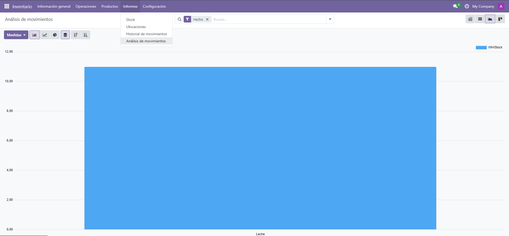
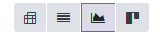
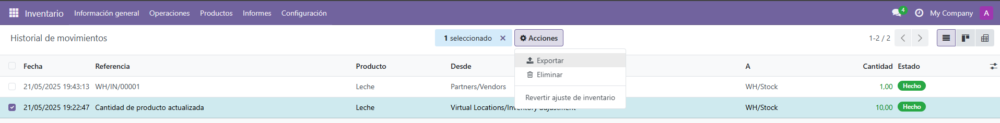
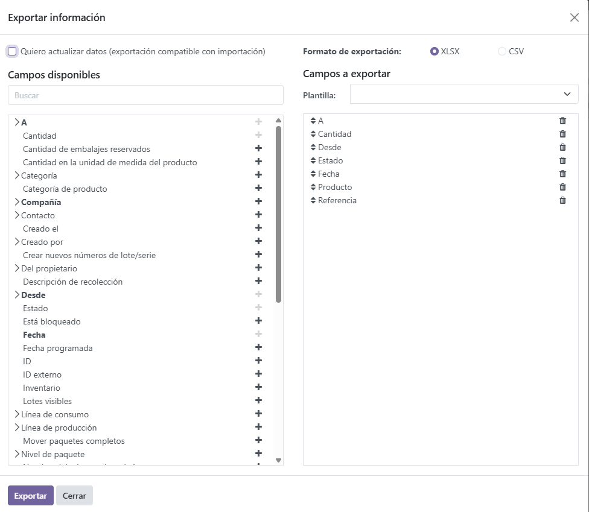

Elaboración de Informes y Exportación de Información en Odoo
¿Qué son los informes en Odoo?
Los informes en Odoo permiten visualizar, analizar y presentar la información almacenada en el sistema. Son útiles para tomar decisiones y hacer seguimiento de la gestión empresarial.
Cómo generar un informe
Odoo para tener un informe tienes que entrar en Informes/Analisis de movimientos y ahi dentro tendremos un informe de nuestros productos y demás cosas en la imagen lo he puesto que me lo enseñe modo gráfico, a continuación enseño los modos que tiene.
La primera opción es para mostrarlo con una tabla dinámica, la segunda modo lista, la tercera modo gráfico y la última modo kanban.
Exportar información
Para exportar la información debemos dirigirnos al historial de movimientos seleccionar uno o varios movimientos, darle a acciones y a exportar.
Tras haberle dado a exportar nos saldra este menú en el que podemos cambiar el formato de exportación y seleccionar otros campos. Una vez hecho eso le daremos a exportar descargaremos el archivo para poder importarlo en otro sitio